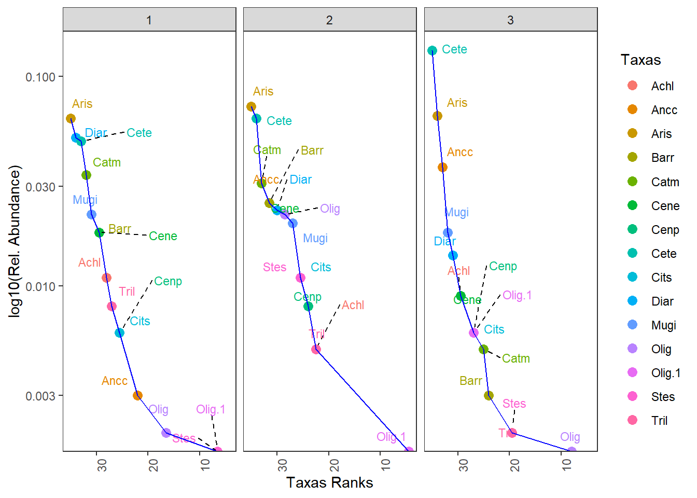
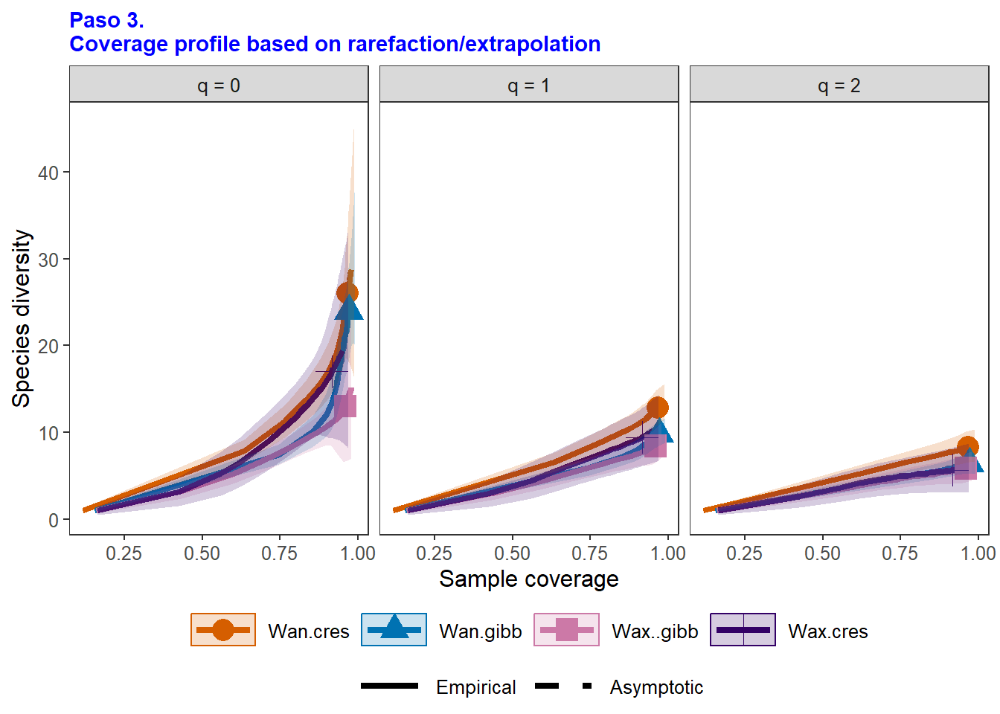
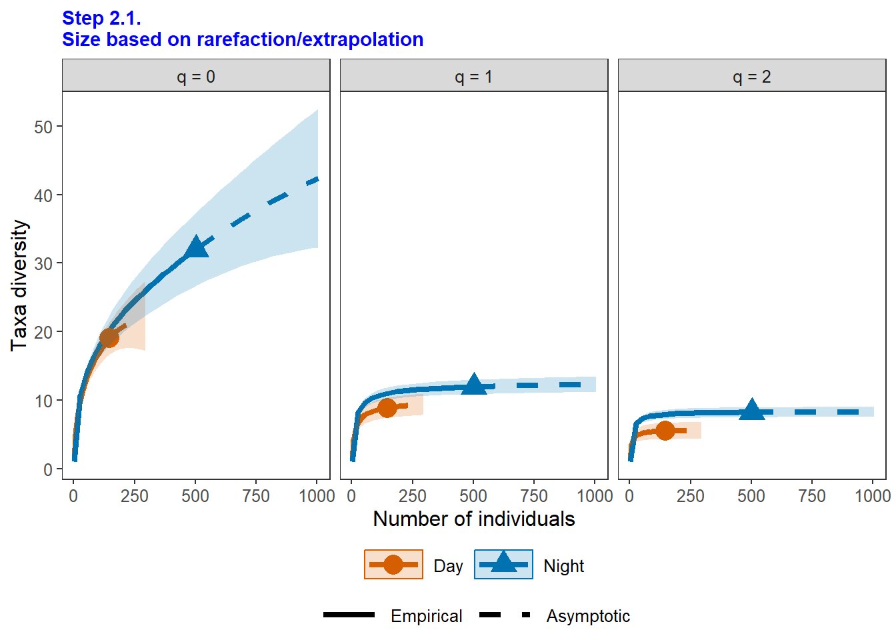
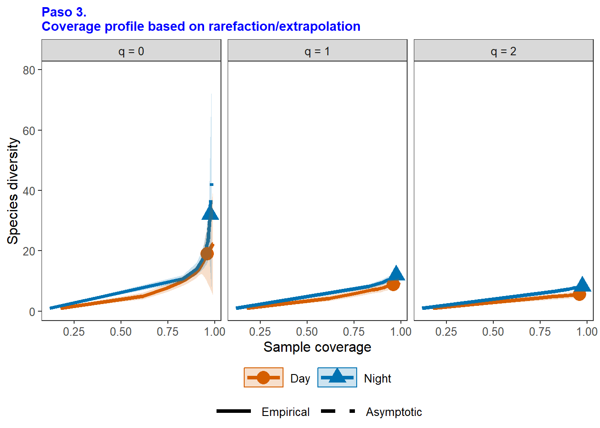
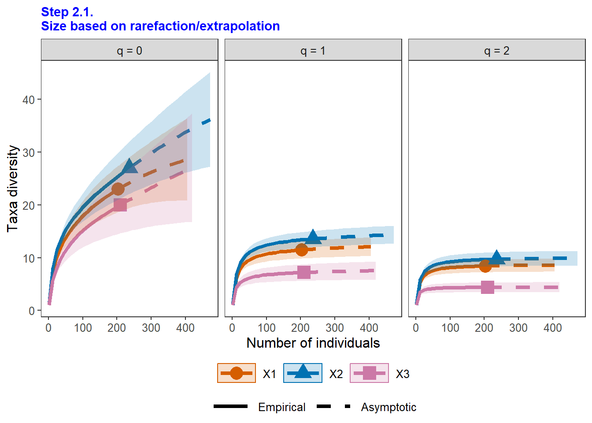
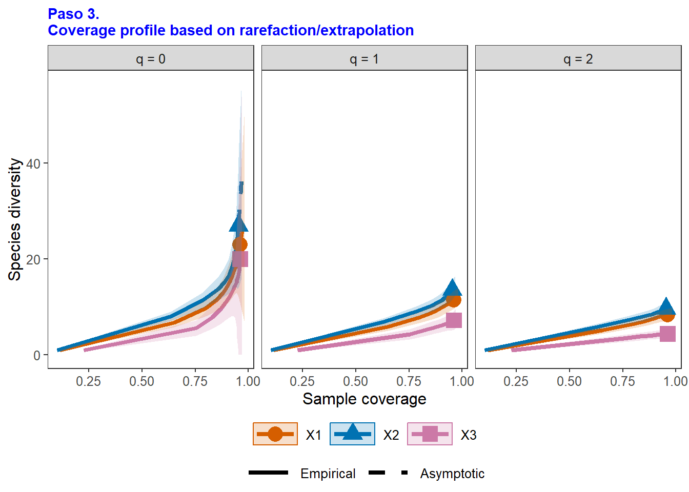

Resumen
El presente ejercicio consiste en el procesamiento inicial de los datos entregados por el profesor Lenin Florez y Alejandro Sandoval, para dar respuesta al siguiente requerimiento: “Analizar el efecto de cambios en las fases lunares (ciclo lunar) y horarios de día vs. noche, sobre los patrones de riqueza, de composición y de abundancia (también la biomasa) de peces estuarinos”. Las fases lunares analizadas se describen en la siguiente figura: Wanning crescent (luna creciente), Waning gibbous (Luna gibosa menguante), Waxing crescent (Luna creciente) y Waxing gibbous (Luna gibosa creciente).

Cargar bases de datos
Se cargan las librerías requeridas para el procesamiento de los datos.
Datos biológicos
Se carga la base de datos con las especies de peces.
| Especies | Abreviaturas |
|---|---|
| Achirus lineatus | Achl |
| Anchovia clupeoides | Ancc |
| Ariopsis sp | Aris |
| Bardiela ronchus | Barr |
| Batrachoides surinamensis | Bats |
| Caranx crysos | Carc |
| Caranx hippos | Carh |
| Caranx latus | Carl |
| Cathorops mapale | Catm |
| Centropomus ensiferus | Cene |
| Centropomus pectinatus | Cenp |
| Centropomus undecimalis | Cenu |
| Cetengraulis edentulus | Cete |
| Chaetodipterus fabel | Chaf |
| Citharichthys spilopterus | Cits |
| Dasyatis guttata | Dasg |
| Diapterus rhombeus | Diar |
| Epinephelus itajara | Epii |
| Eugerres plumieri | Eugp |
| Gerres cinereus | Gerc |
| Gobiomorus dormitor | Gobd |
| Gymnothorax ocellatus | Gymo |
| Lutjanus analis | Luta |
| Lutjanus jocu | Lutj |
| Lycengraulis grossidens | Lycg |
| Megalops atlanticus | Mega |
| Menticirrhus americanus | Mena |
| Mugil incilis | Mugi |
| Oligoplites saliens | Olig |
| Oligoplites saurus | Olig.1 |
| Selene vomer | Selv |
| Sphoeroides testudineum | Spht |
| Stellifer sp | Stes |
| Strongylura timuco | Strt |
| Trichiurus lepturus | Tril |
Elipses
Algunas especies presentan relaciones positivas o directas en sus abundancias, las relaciones inversas son muy bajas.

Datos ambientales
Se carga la base de datos ambientales.
Elipses
Relaciones entre las variables ambientales tienen a ser positivas o directas.

Relación ambientales y taxones
Se observan algunas relaciones negativas entre las variables ambientales y la abundancia de las especies.

Figuras de Cajas
Se analizan los patrones de abundancias de peces (eje y), con diferentes factores (eje x), como las fases lunares (Moon), horarios (Time), y zonas (Zones).

Burbujas
Se relaciona a las especies de peces (eje y), variables ambientales (eje x), colores de las burbujas (fases lunares) y tamaños de las burbujas (abundancias).
Nota: Solo se hará con fases lunares, pero se puede hacer con el resto de factores (horarios y zonas).
Por niveles de pH
Se observa la mayor concentración de taxones abundantes y la mayor riqueza en pH entre 7.5 y 8 unidades.
Por niveles de O2
Se observa la mayor concentración de taxones abundantes y la mayor riqueza en OD entre 3.5 y 4.7 mg/L.

Por niveles de UPS
Se observa la mayor concentración de taxones abundantes y la mayor riqueza en UPS entre 19 y 25 unidades.
Por niveles de Temperatura
Se observa la mayor concentración de taxones abundantes y la mayor riqueza en temperaturas entre 28 y 30 grados centigrados.
Curvas RAD (Fases lunares, Horarios día-noche y por zonas)
RAD por fases lunares (Moon)
Patrón de distribución de abundancias para las 15 especies más abundantes (para no saturar las figuras). Wan.cres y Wan.gibb, muestran la mayor presencia de especies abundantes o dominantes.
RAD por horarios del día (Time)
Patrón de distribución de abundancias para las 15 especies más abundantes (para no saturar las figuras). En la noche se presenta el mayor número de especies abundantes o dominantes.
RAD por Zonas (Zone)
Patrón de distribución de abundancias para las 15 especies más abundantes (para no saturar las figuras). En la zona 3 se presenta el mayor número de especies abundantes o dominantes, seguida de las zonas 2 y 1 respectivamente.

Ajuste de las curvas RAD (Fases lunares, Horarios día-noche y por zonas)
Los modelos de distribución de rango-abundancia (RAD, Rank-Abundance Distribution) siguen una distribución Poisson como base estadística, por ser datos discretos representados por valores de abundancia de las especies censadas. En este sentido los cinco modelos que se describen a continuación corresponde a esta familia de modelos generalizados (Null, Preemption, log-normal, Zipf y Mandelbrot).
La familia Poisson es parte de los Modelos Lineales Generalizados (GLMs), como una opción flexible para modelar datos que no necesariamente siguen una distribución normal. Esta familia es adecuada para modelar datos de conteo como las abundancias de especies. Sin embargo, su aplicabilidad depende de que los datos cumplan con supuestos de independencia y de homogeneidad de varianzas de las medias. Si lo anterior no se cumple, podría ser necesario considerar alternativas más flexibles como la Binomial Negativa.
El comando radfit de R (ajuste de Modelos - RAD), compara los cinco modelos mencionados: Null, Preemption, log-normal, Zipf y Mandelbrot, utilizando los criterios de información de Akaike (AIC) y los Bayesianos o de Schwartz (BIC). Los modelos RAD que se ajustan mejor a los datos, son los que presenten menor AIC y BIC.
En este sentido, los modelos evaluados (Preemption, Lognormal, Zipf, Mandelbrot) asumen la misma familia estadística (Poisson) para garantizar consistencia en los cálculos y comparaciones con trabajos realizados en muestras o ensamblajes similares. La elección de la familia estadística afecta la forma en que se calculan los criterios AIC y el BIC, permitiendo una evaluación equilibrada entre los modelos.
Ajuste del RAD por fases lunares (Moon)
A continuación se tabulan los resultados con los cinco modelos para cada fase lunar, lo importante es seleccionar para cada caso, el modelo que presente el menor AIC y BIC.
RAD models, family poisson
No. of species 26, total abundance 233
par1 par2 par3 Deviance AIC BIC
Null 39.5871 126.0509 126.0509
Preemption 0.17654 21.6136 110.0774 111.3355
Lognormal 1.4245 1.3058 7.7456 98.2094 100.7256
Zipf 0.299 -1.1081 17.8514 108.3151 110.8313
Mandelbrot 5.3459 -2.0802 3.4159 9.6873 102.1510 105.9253
RAD models, family poisson
No. of species 24, total abundance 274
par1 par2 par3 Deviance AIC BIC
Null 93.127 172.441 172.441
Preemption 0.22873 30.018 111.333 112.511
Lognormal 1.4311 1.5112 19.674 102.988 105.345
Zipf 0.36315 -1.2648 34.267 117.582 119.938
Mandelbrot 109.7 -3.1539 5.5868 17.551 102.866 106.400
RAD models, family poisson
No. of species 13, total abundance 72
par1 par2 par3 Deviance AIC BIC
Null 6.0994 47.5182 47.5182
Preemption 0.23331 7.8975 51.3162 51.8812
Lognormal 1.258 1.0249 2.8758 48.2945 49.4244
Zipf 0.33416 -1.0596 2.8938 48.3125 49.4424
Mandelbrot 0.33417 -1.0596 8.6624e-06 2.8938 50.3125 52.0073
RAD models, family poisson
No. of species 17, total abundance 70
par1 par2 par3 Deviance AIC BIC
Null 14.1116 62.3112 62.3112
Preemption 0.21242 14.1658 64.3654 65.1986
Lognormal 0.80179 1.1825 5.4251 57.6247 59.2911
Zipf 0.34422 -1.1533 1.7478 53.9474 55.6139
Mandelbrot 0.34422 -1.1533 1.7583e-06 1.7478 55.9474 58.4471Modelo 1: Wan.cres. Distribución predominante: Lognormal (AIC = 102.9). El patrón lognormal sugiere que el ensablaje de peces está estructurado de forma relativamente equilibrada, donde hay unas pocas especies muy abundantes y muchas especies con abundancias intermedias o bajas. Esto puede reflejar un entorno donde los recursos están repartidos en varios nichos trógicos.
Modelo 2: Wan.gibb. Distribución predominante: Zipf (AIC = 48.29). Los modelos Lognormal (48.29) y Zipf (48.31) tienen valores de AIC muy similares. Los modelos ZIP se asocian a ensamblajes en los que las especies dominantes ejercen el contro sobre los recursos. Esto se asocia a un patrón jerárquico, donde una o pocas especies dominan en abundancia. Esto puede reflejar mecanismos de competencia en los nichos tróficos.
Modelo 3: Wax.gibb. Distribución predominante: Zipf (AIC = 53.94). Aquí, el modelo Zipf es claramente el de mejor ajuste.
Modelo 4: Wax.cres. Distribución predominante: Lognormal (AIC = 102.86). El modelo Lognormal (102.86) es el mejor ajustado, muy cercano al modelo Mandelbrot (106.400).
Finalmente se puede presentar mayor competencia durante las fases lunares Wan.gibb y Wax.gib, en el resto de fases la competencia disminuye y el ensamblaje es más equilibrado en cuanto al uso del recurso, quiza por su mayor disponibilidad. De acuerdo a Ibañez et al. (2006), las distribuciones lognormales, aplican a ensamblajes estables (sin perturbaciones) y/o a oportunistas.
Figuras de los modelos RAD
La línea de mayor grosor es la que representa al modelo de mayor ajuste para cada fase lunar. A continuación se grafican los diagramas de mayor ajuste.

Ajuste del RAD por horarios día-noche (Time)
A continuación se tabulan los resultados con los cinco modelos para cada jornada, lo importante es seleccionar para cada caso, el modelo que presente el menor AIC y BIC.
RAD models, family poisson
No. of species 19, total abundance 147
par1 par2 par3 Deviance AIC BIC
Null 37.4963 97.9286 97.9286
Preemption 0.24107 22.3261 84.7584 85.7028
Lognormal 1.1935 1.4004 7.7767 72.2090 74.0979
Zipf 0.37692 -1.2647 8.1032 72.5355 74.4244
Mandelbrot 0.87051 -1.5987 0.75701 7.1920 73.6243 76.4576
RAD models, family poisson
No. of species 32, total abundance 502
par1 par2 par3 Deviance AIC BIC
Null 209.072 318.126 318.126
Preemption 0.19667 36.012 147.066 148.532
Lognormal 1.6935 1.5363 69.321 182.375 185.307
Zipf 0.32326 -1.2015 119.887 232.941 235.873
Mandelbrot 1.5186e+07 -6.0261 18.926 25.416 140.471 144.868Modelo 1: Day. Distribución predominante: Lognormal (AIC = 72.2), seguido muy de cerca por Zipf (AIC = 72.53). La distribución Lognormal sugiere que, en el horario diurno, las especies tienen una estructura de abundancia equilibrada con predominancia de unas pocas especies más abundantes y muchas de abundancias similares. Esto puede estar asociado con una mayor diversificación de nichos y de recursos tróficos. La similitud en el ajuste con el modelo Zipf podría indicar que hay una ligera jerarquización en la comunidad, pero no tan marcada.
Modelo 2: Night. Distribución predominante: Mandelbrot (AIC = 140.47), seguido por Preemption (AIC = 147.06). El modelo Mandelbrot indica que este ensamblaje en la noche, prsenta una estructura compleja, caracterizada por una jerarquía de en la dominancia de las especies de peces, pero más flexible que el modelo Zipf. Esto puede reflejar dinámicas de abundancia influenciadas por interacciones ecológicas nocturnas, como cambios en la obtención de recursos, el efecto de la depredación, o comportamiento de las especies. El modelo Preemption también que puede haber una fuerte repartición de los recursos, donde unas pocas especies dominan significativamente.
De acuerdo a Alanís-Rodríguez et al. (2020), el ajuste Premption, se denomina de nicho preferencial o de serie geométrica y se asocia a ensamblajes con algunos taxones que dominan por sus mayores densidades de indiviuos, especialmente en etapas iniciales de las sucesiones. Según Alanís-Rodríguez et al. (2020) y (Magurran, 2004), en el ajuste Mandelbrot se asocia a ensamblajes con pocas especies dominantes y en etapas sucesionales iniciales, considerado como uno de los mejores modelos para describir la distribución de la abundancia de especies.
Figuras de los modelos RAD

La línea de mayor grosor es la que representa al modelo de mayor ajuste para cada horario evaluado. A continuación se grafican los diagramas de mayor ajuste.

Ajuste del RAD por zonas (Zone)
A continuación se tabulan los resultados con los cinco modelos para cada zona, lo importante es seleccionar para cada caso, el modelo que presente el menor AIC y BIC.
RAD models, family poisson
No. of species 23, total abundance 203
par1 par2 par3 Deviance AIC BIC
Null 36.6570 111.6121 111.6121
Preemption 0.20222 6.4117 83.3668 84.5023
Lognormal 1.4548 1.2709 20.4063 99.3614 101.6324
Zipf 0.30043 -1.0908 37.1589 116.1140 118.3850
Mandelbrot 2.5606e+09 -7.1813 24.198 4.5651 85.5202 88.9267
RAD models, family poisson
No. of species 27, total abundance 236
par1 par2 par3 Deviance AIC BIC
Null 41.456 129.044 129.044
Preemption 0.17068 15.236 104.824 106.120
Lognormal 1.4571 1.2516 22.464 114.052 116.644
Zipf 0.27366 -1.0461 42.368 133.956 136.548
Mandelbrot 8.0713e+08 -6.6708 26.793 13.417 107.005 110.892
RAD models, family poisson
No. of species 20, total abundance 210
par1 par2 par3 Deviance AIC BIC
Null 100.7204 164.7249 164.7249
Preemption 0.29413 33.5950 99.5994 100.5951
Lognormal 1.1182 1.7068 8.9331 76.9376 78.9290
Zipf 0.45212 -1.4765 6.6855 74.6900 76.6814
Mandelbrot 2.318 -2.1289 1.2439 2.4291 72.4335 75.4207Modelo 1: Zona 1. Distribución predominante: Preemption (AIC = 83.37). El modelo Preemption sugiere una repartición jerárquica de recursos, con pocas especies dominantes.
Modelo 2: Zona 2. Distribución predominante: Preemption (AIC = 104.82). Patrón similar al de la zona 1.
Modelo 3: Zona 3. Distribución predominante: Maldelbrot (AIC = 72.43). Como se mencionó para el caso del patrón nocturno, donde también se presenta este ajuste, hay una estructura compleja, debido al patron de dominancia de las especies, debido a posibles mecanismos de depredación o por cambios en la disponibilidad del recurso.
Figuras de los modelos RAD
La línea de mayor grosor es la que representa al modelo de mayor ajuste para cada zona evaluada. A continuación se grafican los diagramas de mayor ajuste.

Diversidad alfa - propuesta de Chao et al. (2020)
Por fases lunares (Moon)
Patrón general de diversidad por cada fase lunar. Wan.cres y Wang.gibb presentan la mayoa abundancia y riqueza de especies, así como la mayor cantidad de singletons o especies con un individuo (f1) y de doubletons o especies con dos individuos (f2), esta cantidad de singletons afectará considerablemente a su perfil de completitud y el perfil asintótico que se muestran a continuación.
| Moon | N | Richness | f1 | f2 |
|---|---|---|---|---|
| Wan.cres | 233 | 26 | 8 | 4 |
| Wan.gibb | 274 | 24 | 8 | 4 |
| Wax..gibb | 72 | 13 | 3 | 1 |
| Wax.cres | 70 | 17 | 6 | 3 |
Paso 1. Perfil de completitud
El perfil de completitud, para los casos que sea <0.9 indica que la muestra no es completa. Se observa que para la riqueza de especies (q=0) todas las fases lunares son incompleta (<0.9), lo cual indica que puede requerirse un mayor esfuerzo de muestreo o que se pueden encontrar más taxones. Los taxones abundantes (q=1) y muy abundantes (q=2) fueron registrados en su totalidad (>0.9).
| Moon | q = 0 | q = 1 | q = 2 |
|---|---|---|---|
| Wan.cres | 0.77 | 0.97 | 1.00 |
| Wan.gibb | 0.75 | 0.97 | 1.00 |
| Wax..gibb | 0.75 | 0.96 | 1.00 |
| Wax.cres | 0.74 | 0.92 | 0.99 |
Paso 2. Perfil asintótico
El perfil asintótico muestra que en las fases lunares Wan.cres y Wan.gibb, se presenta el mayor número de especies sin detectar (8 especies), seguidas de Wax.cres con 6 especies no detectadas. Este patrón puede afectar para que no se encuentre la asintota de diversidad, en la figura que se presenta a continuación.
| Moon | Estimator | Ob.D | Est.D | Undet. |
|---|---|---|---|---|
| Wan.cres | q = 0 | 26 | 34 | 8 |
| Wan.cres | q = 1 | 13 | 14 | 1 |
| Wan.cres | q = 2 | 8 | 9 | 0 |
| Wan.gibb | q = 0 | 24 | 32 | 8 |
| Wan.gibb | q = 1 | 10 | 10 | 1 |
| Wan.gibb | q = 2 | 6 | 6 | 0 |
| Wax..gibb | q = 0 | 13 | 17 | 4 |
| Wax..gibb | q = 1 | 8 | 10 | 1 |
| Wax..gibb | q = 2 | 6 | 6 | 0 |
| Wax.cres | q = 0 | 17 | 23 | 6 |
| Wax.cres | q = 1 | 9 | 11 | 2 |
| Wax.cres | q = 2 | 6 | 6 | 0 |
La siguiente figura complementa el patrón asintótico de la tabla anterior, en el que se observa que ninguna de las fases lunares se estabiliza en q = 0 (total de especies), ni siquiera interpolando al doble de la abundancia registrada (líneas punteadas, no se estabilizan o no se vuelven asintóticas para la diversidad esperada). Esto se debe al lto número de especies con un solo individuo encontradas (f1).

Paso 3. Perfil no asintótico
La siguiente tabla muestra el patrón no asintótico, en el que se extrae una submuestra de cada fase lunar y para este caso la cobertura calculada es del 97%, para lo cual se espera encontrar mayor número de taxones en Wan.cres, seguida de Wan.gibb, Wax.cres y Wax.gibb respectivamente. Este patrón presenta validez, debido a la falta de asintota en el paso anterior.
| Cmax = 0.969 | q = 0 | q = 1 | q = 2 |
|---|---|---|---|
| Wan.cres | 26.78 | 12.97 | 8.34 |
| Wan.gibb | 23.53 | 9.76 | 6.35 |
| Wax..gibb | 14.12 | 8.78 | 5.97 |
| Wax.cres | 20.75 | 10.51 | 5.84 |
El siguiente perfil complementa a la tabla anterior, para lo cual, todas las curvas presentan una cobertura > 0.9 o cercana a uno en el eje x, para que sus patrones de diversidad sean comparables.

Paso 4. Patrón de uniformidad
Para este caso se observa que la mayor uniformidad de Pielou (J) se presenta en Wax.gibb que representa a la estación con menor número de tazones (q=0) y menos nùmero de singletons (f1).
| Cmax = 0.969 | Pielou J' | q = 1 | q = 2 |
|---|---|---|---|
| Wan.cres | 0.78 | 0.46 | 0.28 |
| Wan.gibb | 0.72 | 0.39 | 0.24 |
| Wax..gibb | 0.82 | 0.59 | 0.38 |
| Wax.cres | 0.78 | 0.48 | 0.25 |
Por Horarios (Times)
Patrón general de diversidad por horario del día. En la noche se presenta la mayor abundancia y riqueza de especies, así como la mayor cantidad de singletons o especies con un individuo (f1) y de doubletons o especies con dos individuos (f2), esta cantidad de singletons afectará considerablemente a su perfil de completitud y el perfil asintótico que se muestran a continuación.
| Solar_day | N | Richness | f1 | f2 |
|---|---|---|---|---|
| Day | 147 | 19 | 6 | 4 |
| Night | 502 | 32 | 13 | 3 |
Paso 1. Perfil de completitud
El perfil de completitud, para los casos que sea <0.9 indica que la muestra no es completa. Se observa que para la riqueza de especies (q=0) los horarios día y noche son inncompletos (<0.9), lo cual indica que puede requerirse un mayor esfuerzo de muestreo o que se pueden encontrar más taxones, especialmente en la noche. Los taxones abundantes (q=1) y muy abundantes (q=2) fueron registrados en su totalidad (>0.9).
| Solar_day | q = 0 | q = 1 | q = 2 |
|---|---|---|---|
| Day | 0.81 | 0.96 | 1 |
| Night | 0.53 | 0.97 | 1 |
Paso 2. Perfil asintótico
El perfil asintótico muestra que en la noche se presenta el mayor número de especies sin detectar (28 especies no detectadas), seguida del día con solo 4 especies no detectadas. Este patrón puede afectar para que no se encuentre la asintota de diversidad, en la figura que se presenta a continuación.
| Solar_day | Estimator | Ob.D | Est.D | Undet. |
|---|---|---|---|---|
| Day | q = 0 | 19 | 23 | 4 |
| Day | q = 1 | 9 | 10 | 1 |
| Day | q = 2 | 5 | 6 | 0 |
| Night | q = 0 | 32 | 60 | 28 |
| Night | q = 1 | 12 | 13 | 1 |
| Night | q = 2 | 8 | 8 | 0 |
La siguiente figura complementa el patrón asintótico de la tabla anterior, en el que se observa que ninguno de los horarios día-noche se estabilizan en q = 0 (total de especies), ni siquiera interpolando al doble de la abundancia registrada (líneas punteadas, no se estabilizan o no se vuelven asintóticas para la diversidad esperada). Esto se debe al lto número de especies con un solo individuo encontradas (f1).

Paso 3. Perfil no asintótico
La siguiente tabla muestra el patrón no asintótico, en el que se extrae una submuestra de cada horario día-noche y para este caso la cobertura calculada es del 98%, para lo cual se espera encontrar mayor número de taxones en la noche (42 especies), seguida de la mañana (22 especies). Este patrón presenta validez, debido a la falta de asintota en el paso anterior.
| Cmax = 0.984 | q = 0 | q = 1 | q = 2 |
|---|---|---|---|
| Day | 21.67 | 9.25 | 5.54 |
| Night | 42.40 | 12.29 | 8.27 |
El siguiente perfil complementa a la tabla anterior, para lo cual, todas las curvas presentan una cobertura > 0.9 o cercana a uno en el eje x, para que sus patrones de diversidad sean comparables.

Paso 4. Patrón de uniformidad
Para este caso se observa que la mayor uniformidad de Pielou (J) se presenta en la mañana que representa a la estación con menor número de tazones (q=0) y de especies con un solo individuo (f1).
| Cmax = 0.984 | Pielou J' | q = 1 | q = 2 |
|---|---|---|---|
| Day | 0.72 | 0.40 | 0.22 |
| Night | 0.67 | 0.27 | 0.18 |
Por Zonas (Zone)
Patrón general de diversidad por horario del día. En la la zona 2 se presenta la mayor abundancia y riqueza de especies, así como la mayor cantidad de singletons o especies con un individuo (f1) y de doubletons o especies con dos individuos (f2), seguida de las zonas y 1, respectivamente. Esta cantidad de singletons afectará considerablemente a su perfil de completitud y el perfil asintótico que se muestran a continuación.
| Zone | N | Richness | f1 | f2 |
|---|---|---|---|---|
| 1 | 203 | 23 | 8 | 3 |
| 2 | 236 | 27 | 11 | 2 |
| 3 | 210 | 20 | 8 | 1 |
Paso 1. Perfil de completitud
El perfil de completitud, para los casos que sea <0.9 indica que la muestra no es completa. Se observa que para la riqueza de especies (q=0) Las tres zonas son bastante inncompletas (<<0.9), lo cual indica que puede requerirse un mayor esfuerzo de muestreo o que se pueden encontrar más taxones, especialmente en las zonas 3 y 2. Los taxones abundantes (q=1) y muy abundantes (q=2) fueron registrados en su totalidad (>0.9).
| Zone | q = 0 | q = 1 | q = 2 |
|---|---|---|---|
| 1 | 0.68 | 0.96 | 1 |
| 2 | 0.47 | 0.95 | 1 |
| 3 | 0.39 | 0.96 | 1 |
Paso 2. Perfil asintótico
El perfil asintótico muestra que en la zona 3 se presenta el mayor número de especies sin detectar (32 especies no detectadas), seguida de las zonas 2 y 1 con 30 y 11 especies no detectadas. Este patrón puede afectar para que no se encuentre la asintota de diversidad, en la figura que se presenta a continuación.
| Zone | Estimator | Ob.D | Est.D | Undet. |
|---|---|---|---|---|
| 1 | q = 0 | 23 | 34 | 11 |
| q = 1 | 11 | 13 | 1 | |
| q = 2 | 8 | 9 | 0 | |
| 2 | q = 0 | 27 | 57 | 30 |
| q = 1 | 14 | 15 | 2 | |
| q = 2 | 10 | 10 | 0 | |
| 3 | q = 0 | 20 | 52 | 32 |
| q = 1 | 7 | 8 | 1 | |
| q = 2 | 4 | 4 | 0 |

Paso 3. Perfil no asintótico
La siguiente tabla muestra el patrón no asintótico, en el que se extrae una submuestra de cada horario día-noche y para este caso la cobertura calculada es del 97%, para lo cual se espera encontrar mayor número de taxones en la zona 2 (36 especies), seguida de las zonas 3 y 1 (25 especies). Este patrón presenta validez, debido a la falta de asintota en el paso anterior.
| Cmax = 0.968 | q = 0 | q = 1 | q = 2 |
|---|---|---|---|
| X1 | 24.88 | 11.67 | 8.48 |
| X2 | 36.21 | 14.34 | 9.87 |
| X3 | 24.80 | 7.44 | 4.39 |
El siguiente perfil complementa a la tabla anterior, para lo cual, todas las curvas presentan una cobertura > 0.9 o cercana a uno en el eje x, para que sus patrones de diversidad sean comparables.

Paso 4. Patrón de uniformidad
Para este caso se observa que la mayor uniformidad de Pielou (J) se presenta en la zona 1 que representa a la estación con menor número de tazones (q=0) y de especies con un solo individuo (f1).
| Cmax = 0.968 | Pielou J' | q = 1 | q = 2 |
|---|---|---|---|
| X1 | 0.76 | 0.45 | 0.31 |
| X2 | 0.74 | 0.38 | 0.25 |
| X3 | 0.63 | 0.27 | 0.14 |
Pendientes por realizar:
Análisis de gremios tróficos. Hay otro html en donde se encuentra esta información.
Patrones multivariados. Habrá otro html con esta información (protocolo del PCA, NMDS, CA, LDA, DCA, CLA, RDA, PERMANOVAS y BIOENV).